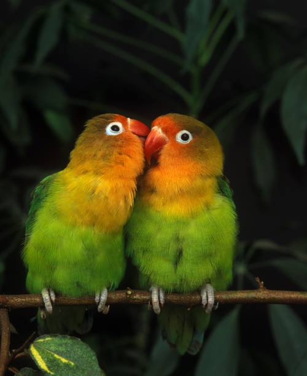

The Indian Roller is a colorful bird known for its brilliant blue wings and graceful flight. Commonly found in open fields, farmlands, and woodland areas, it is often seen perched on trees or electric wires. This bird mainly feeds on insects, small reptiles, and frogs. Its striking blue feathers become even more vibrant during flight, creating a spectacular display in the sky. The Indian Roller is admired for its agility, beauty, and unique aerial acrobatics. Because of its stunning appearance, it is a favorite subject for birdwatchers and wildlife photographers.

The Red-whiskered Bulbul is a small and attractive songbird known for its black crest, white throat, and distinctive red patch below its eyes. It is commonly found in gardens, forests, and rural areas across Asia. This bird feeds on fruits, nectar, insects, and small berries. The Red-whiskered Bulbul is admired for its cheerful calls and active nature. Its elegant appearance and vibrant markings make it a favorite among birdwatchers and photographers. Often seen perched on branches and wires, it adds beauty and charm to its surroundings.

The Common Kingfisher is a small and colorful bird known for its bright blue feathers and orange underparts. It is commonly found near rivers, lakes, ponds, and wetlands where it hunts for fish and aquatic insects. With its sharp beak and excellent eyesight, it can spot prey from a distance and dive swiftly into the water. The kingfisher is admired for its speed, precision, and striking appearance. Its vibrant colors make it one of the most photographed birds in the world. Watching a kingfisher in action is

The Great Egret is a graceful white waterbird known for its long neck, elegant wings, and sharp yellow beak. It is commonly found near lakes, rivers, wetlands, and marshes where it hunts for fish, frogs, and small aquatic animals. This bird is admired for its patience, often standing still for long periods before swiftly catching its prey. Its pure white plumage and majestic flight make it a symbol of beauty and serenity in nature. The Great Egret is a favorite subject among wildlife photographers due to its striking appearance and elegant movements. Watching this bird glide across the water is a truly captivating experience.

The Asian Paradise Flycatcher is a beautiful bird known for its elegant appearance, glossy black head, and long flowing tail feathers. It is commonly found in forests, gardens, and wooded areas across Asia. This bird feeds mainly on flying insects, which it catches with impressive speed and agility. Its striking colors and graceful movements make it one of the most admired birds among birdwatchers. The Asian Paradise Flycatcher is often seen perched quietly before darting through the air to catch its prey. Its beauty and charm make it a favorite subject for wildlife photographers.

The House Sparrow is a small and familiar bird commonly found in towns, villages, and urban areas. It is known for its brown and gray plumage, cheerful chirping, and social nature. House Sparrows mainly feed on seeds, grains, and small insects. These adaptable birds often build their nests near homes and buildings. They play an important role in the ecosystem by helping control insect populations. Despite their small size, House Sparrows are resilient birds that thrive alongside humans.

The Swan is a graceful waterbird known for its elegant white feathers, long neck, and smooth movements across the water. It is commonly found in lakes, ponds, rivers, and wetlands around the world. Swans feed on aquatic plants, small fish, and insects found in shallow waters. These birds are admired for their beauty, strength, and lifelong pair bonds. Their calm presence and majestic appearance make them a favorite among nature lovers and wildlife photographers. Watching a swan glide effortlessly across the water is a symbol of peace and elegance.

The White-throated Kingfisher is a striking bird known for its bright blue wings, rich brown head, and distinctive white throat. It is commonly found near wetlands, fields, gardens, and open countryside across Asia. This bird feeds on fish, insects, frogs, lizards, and other small creatures. With its strong red beak and sharp eyesight, it is an excellent hunter. The White-throated Kingfisher is often seen perched on branches, patiently watching for prey. Its vibrant colors and graceful presence make it a favorite among birdwatchers and wildlife photographers.

The Indian Peafowl, commonly known as the Peacock, is one of the most beautiful and colorful birds in the world. It is famous for its vibrant blue feathers, elegant crest, and magnificent tail adorned with eye-shaped patterns. Peacocks are commonly found in forests, grasslands, and rural areas across the Indian subcontinent. They feed on seeds, fruits, insects, and small reptiles. During courtship, the male spreads its stunning tail feathers in a spectacular display to attract a mate. Its majestic appearance and rich colors make it a favorite subject for wildlife photographers and nature enthusiasts.

The Eastern Bluebird is a small and colorful songbird known for its bright blue wings and warm orange chest. It is commonly found in open fields, grasslands, and woodland edges where it searches for insects and berries. This bird is admired for its gentle nature and beautiful appearance. Eastern Bluebirds often perch on branches or fence posts while looking for food. Their graceful flight and vibrant colors make them a favorite among birdwatchers and wildlife photographers. The sight of a bluebird in flight is often considered a symbol of happiness and hope.

The Purple-rumped Sunbird is a small and colorful bird admired for its bright yellow belly, glossy dark head, and shimmering purple throat. Using its long curved beak, it feeds on nectar from flowers and helps in pollination. These energetic birds are commonly found in gardens, forests, and flowering landscapes across India. Their quick movements and vibrant colors make them a favorite subject for birdwatchers and wildlife photographers alike

Lovebirds are small, brightly colored parrots known for their strong social bonds and affectionate nature. Their vibrant green feathers, orange faces, and bright red beaks make them one of the most attractive birds in the world. These birds are highly active, intelligent, and enjoy the company of their mates, often seen sitting closely together. Native to Africa, lovebirds are popular pets and are admired for their playful behavior and cheerful personalities.

The Common Kestrel is a small bird of prey known for its remarkable ability to hover in the air while searching for food. With its sharp eyesight, spotted wings, and long tail, it can easily spot insects, small mammals, and reptiles from above. Kestrels are found across open fields, grasslands, and farmlands, where they play an important role in controlling pest populations. Their graceful flight and hunting skills make them one of the most fascinating raptors in the bird world.

Hummingbirds are among the smallest and most fascinating birds in the world. Known for their incredible flying abilities, they can hover in place, fly backward, and move rapidly between flowers while feeding on nectar. Their fast-beating wings create a unique humming sound, giving them their name. With their brilliant colors and energetic nature, hummingbirds play an important role in pollination and add beauty to gardens and natural habitats.

The Greylag Goose is a large and elegant waterbird known for its strong build, long neck, and distinctive orange beak. Commonly found in lakes, rivers, wetlands, and grasslands, these birds are excellent swimmers and powerful fliers. Greylag Geese often travel in groups and are famous for their seasonal migrations across vast distances. Their calm nature, impressive flight formations, and adaptability make them one of the most recognizable geese in the world.